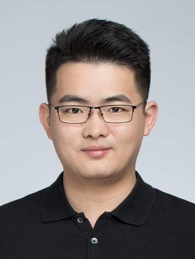

Dr. Hao Chen Assistant Professor
Room 3517 (via lifts 25-26)
Department of Computer Science and Engineering
The Hong Kong University of Science and Technology
Clear Water Bay, Kowloon, Hong Kong
Email: jhc[at]cse.ust.hk |
 |
Positions (including PhDs/RAs/Postdocs/Interns) are available on Machine Learning in Medical Imaging and Analysis. Strong self-motivation is preferred.
If you are HKUST students and interested in doing research with me, please send me an email.
One paper was accepted in Diabetes Care (IF: 19.1).
Two papers were accepted in MICCAI 2021.
Dr. Hao Chen is an Assistant Professor at the Department of Computer Science and Engineering (CSE), Hong Kong University of Science and Technology (HKUST). He leads the SMART (Scalable Medical Analysis, Reasoning and Treatment) Group and serves as Associate Director in Center of Medical Imaging and Analysis, HKUST. He obtained Hong Kong PhD Fellowship in 2013 and received PhD degree from The Chinese University of Hong Kong (CUHK). He was a postdoctoral research fellow in CUHK and a visiting scholar in Utrecht University Medical Center previously. He also has rich industrial research experience including Siemens and co-founded a startup. He holds a dozen of patents in AI and medical image analysis. He received several premium awards including Best Paper Award in MIAR 2016, CUHK Faculty Outstanding Thesis Award in 2017, MICCAI Young Scientist Publication Impact Award in 2019. He also led the team winning 15+ grand challenges, such as RSNA Challenge on Pneumonia Screening, etc.
Medical Image Analysis, Deep Learning, Computer Vision, Computational Pathology, etc. Particular interests on generalizable, interpretable and data-efficient learning recently.
10/2019 MICCAI Young Scientist Publication Impact Award
08/2018 CUHK Faculty Outstanding Thesis Award
09/2017 Best Paper Award of Medical Image Analysis-MICCAI 2017
09/2016 MIAR Best Paper Award, Switzerland
03/2013 Hong Kong PhD Fellowship
12/2012 Honorable Gold Medal, Beihang University (10 awardees)
2010-2012 National Scholarship of China
◎2021-02 Deep Learning for Large-scale Computational Pathology. Hong Kong Pathology Forum ◎2020-01 CNNs for Image Segmentation. PathLAKE Masterclass: Data Science for Computational Pathology, UK ◎2019-10 How Deep Learning Can Help in the Radiology Diagnosis? Keynote in 2019 Macao Radiology Association Annual Scientific Meeting, China ◎2019-9 How Deep Learning Can Help in the Clinical Diagnosis? Create, Manage, and Deploy in the Clinical Workflow. Keynote in MICCAI CLIP Workshop, China ◎2019-3 AI in OCT: What is 3D Deep Learning? Asia-Pacific Academy of Ophthalmology Congress. Bangkok, Thailand ◎2016-07 Deep Learning for Histopathology Image Analysis, Medical Vision Workshop in CVPR 2016 (Las Vegas) ◎2016-01 Deep Learning in Medical Imaging (National Institute of Health, Washington)
Program Committee Area Chair of MICCAI 2021, Senior PC of AAAI 2022, PC of AAAI 2021 Journal Reviewer IEEE Transactions on Pattern Recognition and Machine Intelligence (TPAMI) Nature Communications Medical Image Analysis (MIA) IEEE Transactions on Medical Imaging (TMI) npj Digital Medicine NeuroImage IEEE Transactions on Neural Networks and Learning Systems (TNNLS) IEEE Transactions on Cybernetics IEEE Transactions on Image Processing (TIP) IEEE Transactions on Biomedical Engineering (TBME) IEEE Reviews in Biomedical Engineering EBioMedicine JAMA Network Open IEEE Computational Intelligence Magazine IEEE Journal of Biomedical and Health Informatics Machine Learning for Biomedical Imaging Medical Physics Patter Recognition International Journal of Computer Assisted Radiology and Surgery (IJCARS) Regular Conference Reviewer AAAI, IJCAI, MICCAI, NeuIPS, CVPR, IROS, IPCAI, ISBI, MIDL, MICCAI-COMPAY, MICCAI-AE-CAI
◎2020/09 Top3 in MICCAI 2020 RibFrac Challenge: Rib Fracture Detection and Classification
◎2018/11 Top5 in Kaggle RSNA Pneumonia Detection Challenge
◎2018/09 Winner on the MICCAI 2018 Multi-organ Nuclei Segmentation Challenge
◎2016/10 Winner on the MICCAI 2016 M2CAI Challenge on Surgical Workflow Recognition
◎2016/10 Winner on the MICCAI 2016 IVD Localization and Segmentation from 3D Multi-modality Images
◎2016/10 State-of-the-art record was achieved from our team on Cancer Metastasis Detection in Lymph Node
◎2016/10 CU_DL with 3D Deep Learning method placed 1st on MICCAI 2013 Brain Segmentation from MR Images
◎2016/05 CUMedVision won the 1st place in 2016 ISBI LUNA (lung nodule detection from CT images) Challenge.
◎2016/05 CUMedVision won the 1st place in 2016 ISBI Skin Lesion Classification Challenge out of 20+ teams.
◎2015/10 MICCAI Gland Segmentation Challenge. CUMedVision won the 1st place out of 13 teams. [NVIDIA news]
◎2015/10 2015 MICCAI Nuclei Segmentation Challenge. Our team (CUMedVision) won the 1st place.
◎2015/10 2015 MICCAI Endoscopic Vision Challenge. Our team (CUMedVision) won the 1st place on Polyp Detection from videos in terms of overall F1 score and detection latency.
◎2015/10 Our team won the 1st place in 2015 MICCAI IVD Localization Challenge.
◎2015/10 2012 ISBI Challenge: Segmentation of neuronal structures in Electron Microscopy (EM) stacks. Our team (CUMedVision) placed 1st on the neuronal structure segmentation out of 38 teams. [Leader board]
◎2014/10 MITOS-ATYPIA-14 challenge, 2014. Our team won the 1st place among the 17 teams on mitosis detection.
Image Processing, Fall 2021